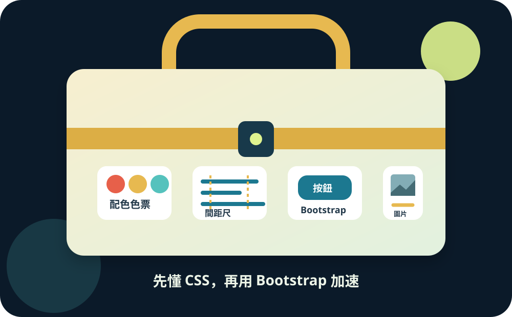

WEEK 04 · CSS × BOOTSTRAP × AI
網站改造
大作戰
小安的活動網站內容都有了，卻像一張沒排版的公告。今天先看懂 CSS，再用 AI 小步提出、解釋與驗證修改，最後打開 ASP.NET 已準備好的 Bootstrap 工具箱。

MISSION BRIEFING
內容沒變，感受完全不同。
普通公告活動宣傳頁
先觀察：你找到背景、卡片、圖片、間距、按鈕哪幾個差異？
MISSION MAP
三節課，完成六個勾。
- 1看懂 CSS：能指出改誰、改什麼、改成什麼。
- 2換網站氣氛：選擇主題，文字仍清楚。
- 3打開工具箱：確認 ASP.NET 已載入 Bootstrap。
- 4組裝活動卡：卡片、間距、圖片、按鈕都正常。
- 5AI 輔助個人化：下清楚指令、實測建議，不無條件照抄。
- BOSS現場修改：老師抽一題，你操作並說明。
過關標準：不是 class 越多越好；畫面好讀、功能可用，而且你知道自己改了什麼。
第一節 · CSS 改造原理THE WORKFLOW
每次只改一小步，
每次都回瀏覽器確認。
1找到位置
HTML 在 Index.cshtml；自己的樣式放在 site.css。
2改一個值
一次只改顏色、間距或圓角中的一項。
3儲存驗證
重新整理，再說出畫面發生了什麼變化。
修改 → 儲存 → 重新整理 → 觀察 → 再調整
安全護欄：保留 Index.cshtml 頂端的 @page、@model 與 @{...}；不要修改 Index.cshtml.cs。
第一關 · 看懂 CSSCSS ANATOMY LAB
一條規則，只問三個問題。
.activity-card {
background-color: #f5f0df;
}
COLOR FITTING ROOM
換色不是亂選，
文字要看得清楚。
東海夜間攝影
一起探索夜晚的校園，新手也能參加。
查看活動選一組氣氛
body {
background-color: #0f2635;
color: #f7f4e9;
}
自己的版本可以不同，但不能讓深色文字消失在深色背景裡。
PROMPT RECIPE
不要只說「幫我變漂亮」，
把六件事交代清楚。
1 角色／背景你是前端助教；這是 ASP.NET Razor Page。
2 目標我要改善配色、按鈕、間距或圖片。
3 現有程式碼貼最小相關 HTML／CSS，不貼整個專案。
4 限制保留 @page／@model，不加 CDN、不改 bootstrap.min.css。
5 預期輸出先解釋原因，再給最小可替換片段。
6 驗收條件文字清楚、圖片不超框、手機不橫向捲動。
AI 是結對程式設計夥伴，不是答案印表機：你仍要看懂、實際執行、測試，再決定是否採用。
暫停講解 · 學生實作PAUSE & PRACTICE 01
先做出自己的配色，
再繼續學 Bootstrap。
15分鐘
學生現在完成
- 可用六要素提示詞請 AI 提出 3 組配色。
- 自己選一組，在 site.css 修改。
- 儲存、重新整理，確認文字對比。
- 指出 selector／property／value。
完成條件
- 網站有自己的主色。
- 標題與內文都清楚可讀。
- 能說明採用或拒絕了哪項 AI 建議。
老師現在：巡視並處理「CSS 沒載入／選擇器拼錯」；不要先替學生完成。提早完成者可再調整一個按鈕顏色。
第二節 · Bootstrap 加速工具TOOLBOX SCAN
Bootstrap 不是 ASP.NET，
但範本通常已經幫你準備好。
Pages/
└── Shared/
└── _Layout.cshtml
wwwroot/
└── lib/
└── bootstrap/
└── dist/
├── css/
└── js/
打開 Pages/Shared/_Layout.cshtml，尋找這一行：
<link rel="stylesheet"
href="~/lib/bootstrap/dist/css/bootstrap.min.css" />
找不到時：先請老師確認範本，不要自行貼陌生 CDN；純 HTML 備用檔只用來練習，不代表 ASP.NET 已啟動。
BUTTON FITTING ROOM
同一個連結，
替換一個 class 就能換裝。
<a class="btn btn-primary">
查看活動
</a>
btn 建立按鈕基本外型；btn-primary 決定這次的配色。
CARD ASSEMBLY
把第三週的內容，
裝進容易閱讀的活動卡。
<div class="card shadow-sm mb-4">
<img src="/images/campus-night.svg"
class="card-img-top"
alt="月光下的校園步道">
<div class="card-body">
<h2 class="card-title">東海夜間攝影</h2>
<p class="card-text">一起探索夜晚的校園。</p>
<a class="btn btn-primary" href="#">查看活動</a>
</div>
</div>
這次只需要辨認
- card：整張卡片
- card-body：卡片內容區
- card-title / card-text：標題與文字
- shadow-sm：小陰影
- mb-4：卡片下方留空間
不用背全部。需要哪個，就回來查哪個。
BE SPECIFIC
模糊問題得到猜測，
清楚條件得到可驗證的修改。
✕ 太模糊
幫我把網站變漂亮，程式碼都幫我改好。
AI 不知道技術、限制、修改範圍與完成標準，容易整頁重寫。
✓ 可以直接使用
你是前端助教。這是已載入 Bootstrap 的 ASP.NET Razor Page。
目標：只優化活動卡的圖片、間距與按鈕。
現有程式碼：[貼上 card HTML 與相關 CSS]
限制：保留 @page/@model；不加 CDN；不改 bootstrap.min.css。
輸出：先列 3 個修改原因，再給最小可替換片段。
驗收：390px 無橫向捲動；圖片不超框；連結仍可點；文字清楚。
PAUSE & PRACTICE 02
把第三週內容，
裝成一張可操作的活動卡。
20分鐘
學生現在完成
- 先完成 card、card-body 與按鈕。
- 把最小相關片段與限制交給 AI。
- 只採用一項看得懂的優化建議。
- 儲存、重新整理並縮窄瀏覽器。
完成條件
- 原本活動文字保留，連結仍可點。
- 能指出 AI 建議改了哪個 class。
- 能用畫面結果判斷建議是否有效。
老師現在：先看 HTML 標籤是否成對，再看 class 拼字。完成者縮窄瀏覽器，確認卡片沒有超出。
SPACING LAB
Padding 是卡片裡面的
呼吸空間。
.activity-card {
padding: 24px;
}
Bootstrap 對照：p-0 到 p-5 是預先設計好的間距等級，不是直接等於 px。
IMAGE RESCUE
圖片衝出卡片，
哪一個 class 能救回來？
<img src="/images/campus-night.svg"
alt="月光下的東海校園步道">
img-fluid 讓圖片寬度不超出容器；rounded 加入圓角。保留第三週寫好的具體 alt。
YOUR STYLE
Bootstrap 打底，
自己的 CSS 決定個性。
/* wwwroot/css/site.css */
.activity-hero {
background-color: #102f43;
color: #fff8df;
border-radius: 20px;
}
.activity-hero strong {
color: #dff38f;
}
至少自行修改兩項
- 網站主色或卡片顏色
- 按鈕樣式
- 圓角或陰影
- 上下空間
- 標題大小
不要修改 bootstrap.min.css。自己的樣式寫在 site.css，才不會把整套工具改壞。
REVIEW LOOP
AI 說完成，不代表真的完成。
1讀
逐行看修改，先確認沒有碰禁區。
2比
比較修改前後，只保留需要的差異。
3跑
啟動 localhost，不能只看聊天視窗。
4測
點連結、縮到 390px、檢查文字與圖片。
5追問
描述實際現象，請 AI 只修失敗的地方。
追問範例：套用後，在 390px 寬度仍出現橫向捲動；圖片已正常。請保留目前 HTML，只找出造成 overflow 的 CSS，解釋原因並提供最小修改。
學生要能回答：AI 建議了什麼？我採用了哪一項？我如何證明它有效？
暫停講解 · 學生實作PAUSE & PRACTICE 03
修好圖片與間距，
再加入兩項自己的設計。
20分鐘
學生現在完成
- 圖片加入 img-fluid 與具體 alt。
- 用 AI 檢查間距、對比與 390px 畫面。
- 只採用自己能解釋的建議。
- 在 localhost 實測，失敗就描述現象追問。
完成條件
- 窄畫面下圖片不超出卡片。
- 文字仍有足夠對比。
- 能說明 AI 建議、實際修改與驗證結果。
老師現在：一半時間提醒全班縮窄瀏覽器。較慢者只完成圖片＋一項配色；較快者可做亮／暗版本。
PAIR TEST
交換座位，不幫對方改，
只回報你看見的問題。
A閱讀
主標題與活動資訊是否清楚？文字有沒有融入背景？
B操作
按鈕能否點擊？用 Tab 能不能找到連結？
C縮窄
縮窄瀏覽器後，圖片是否仍在卡片裡？
回饋句型：「我在＿＿操作時看到＿＿，建議你檢查＿＿。」不要只說「怪怪的」。
FINAL BOSS · LIVE EDIT
最後一題，老師看著你完成。
按下「抽一題」，取得你的最終改造任務。
規則：找到位置、完成小修改、重新整理，最後說明改了哪個 class 或 CSS 屬性。不比速度，不需要背答案。
MISSION COMPLETE
檢查最後六格。
WEEK 04 CLEAR
小安的活動網站已完成改造！
你已經能看懂基本 CSS、運用 Bootstrap 元件，並用 AI 提出小步修改後在瀏覽器親自驗證。
請老師驗收；通過後即可下課。
BONUS · 完全選做
已過關？選一題深入，
不要一次全做。
亮／暗雙版本
為同一張活動卡設計兩種主題，並比較文字對比。
兩欄活動卡
查詢 Bootstrap grid，讓寬螢幕兩欄、窄螢幕一欄。
柔和互動
在自己的按鈕加入 transition，再比較有無動畫的差異。
選做不影響通關。共同五關與 Boss 完成後再挑戰；下週會把漂亮頁面接上真正的表單流程。